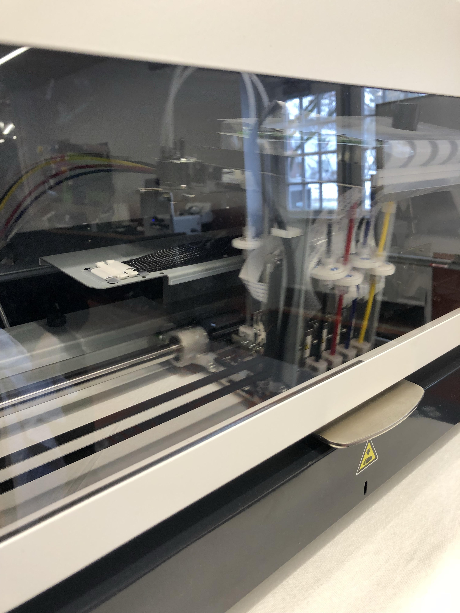
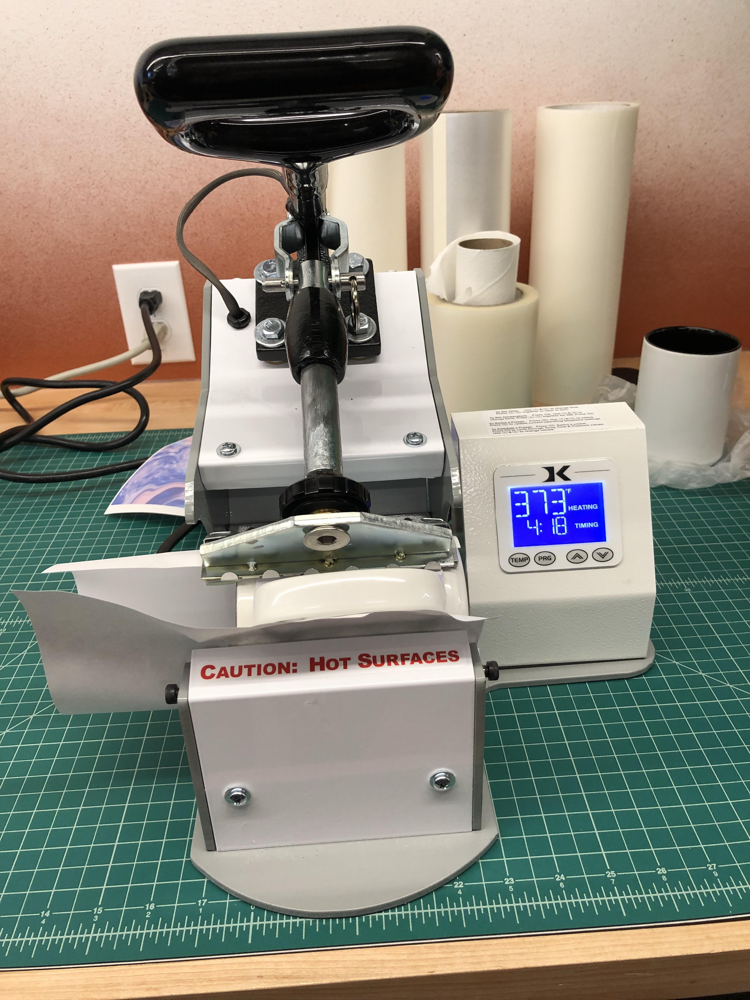
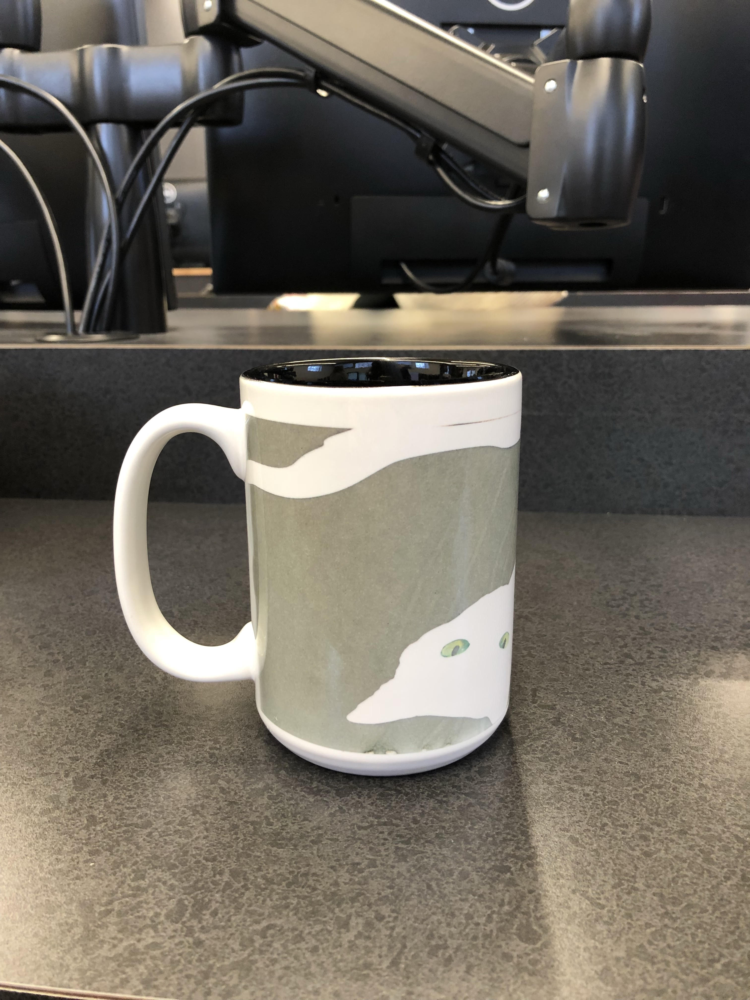
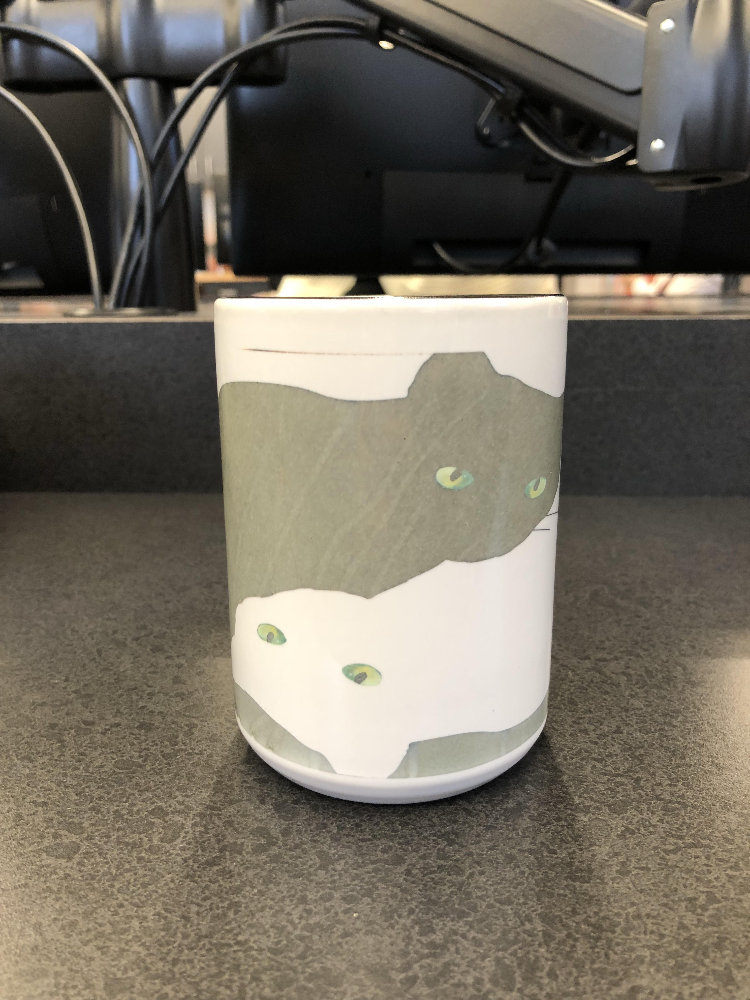
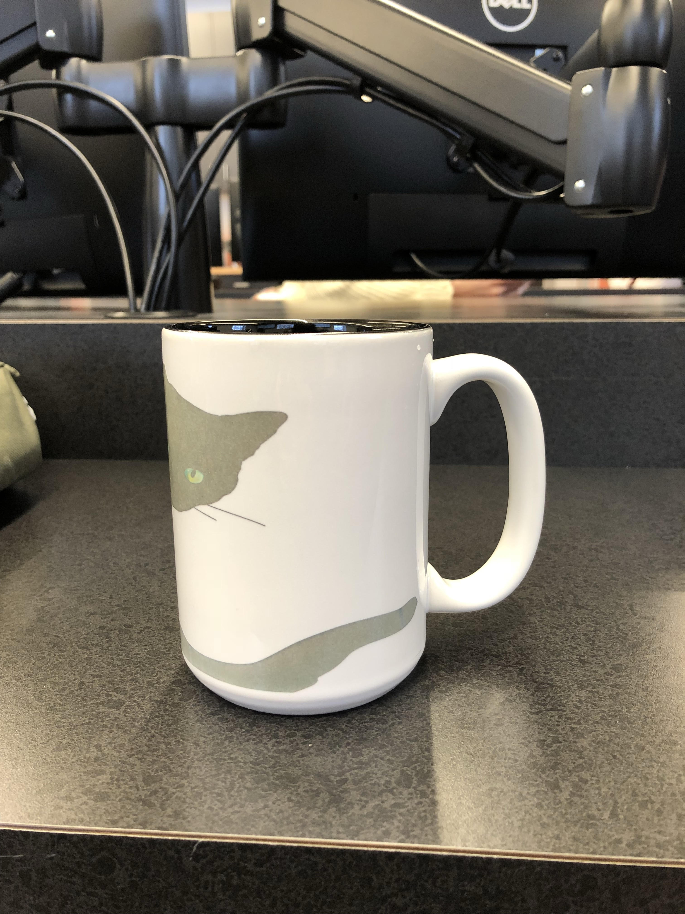

Rotation 3: Design/Garment and Sublimation Printing
Project Description:
I designed an image of me sleeping on top of a slice of pizza for my t shirt design. For this t shirt project, I used the photshop and the GT3PDIP software. I have some experience using photoshop before so the process was not that difficult for me. Once the photshop process was done, I exported to the other software and postioned the image to my liking. I then picked out a white t shirt and had it pressed to remove any creases before transfering it on to the printing machine. I was happy with the end result of this project.


Project Description:
For the sublimation printing project, I picked a mug to transfer my design on. I used the CorelDRAW software to format my design to fit on the mug. I went on the dye trans website and looked up instructions on how to do the dye sublimation on the mug. The process was straightforward and the website was helpful because it provided in-depth instructions and video tutorials. I printed my cat design on the printer, taped it to the mug, put on a layer of white paper around the mug, and proceeded to put it on the press machine for 5 minutes at 400 degrees. The mug turned out really cool, but there were some lines that showed up on the mug, which was my fault because I didn't cut the paper properly. Nonetheless, I'm happy with my mug!



